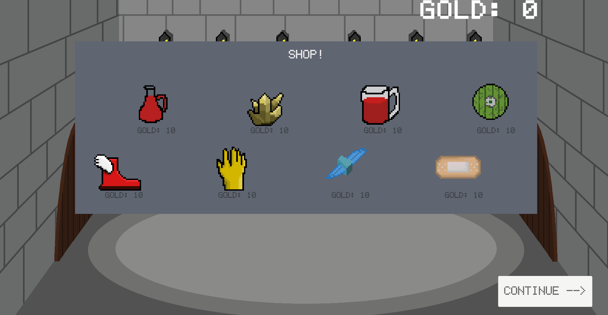
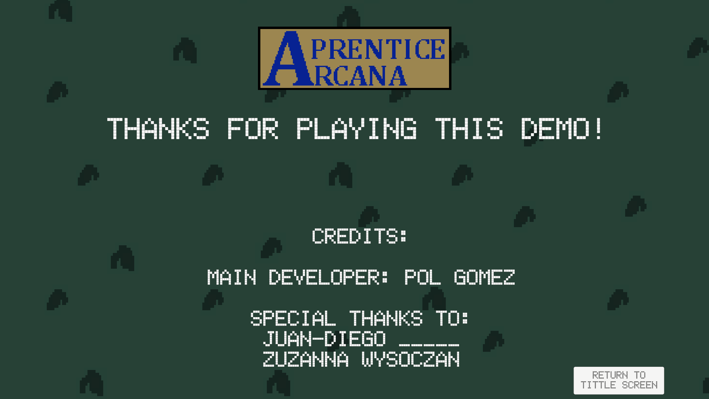
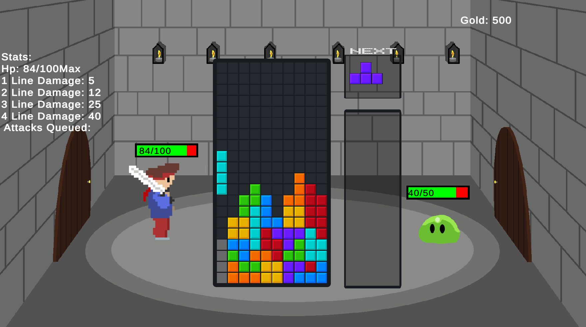

Aprentice Arcana is a solo-developed prototype blending classic Tetris mechanics with roguelike progression. Designed entirely by me, this game experiments with reimagining old mechanics into a modern roguelike structure — a concept inspired by some of my favorite indie games.

Key Features (Prototype Stage)
- Unique blend of falling-block mechanics with roguelike progression systems.
- Procedurally escalating difficulty and modular upgrade paths.
- Solo-developed art, code, and game design.
- Early prototype representing experimental indie design.
My Role
Aprentice Arcana is a completely solo project. I was responsible for:
- Game design and mechanical prototyping.
- Programming the core game loop and procedural systems in Unity.
- Creating all placeholder art and UI assets.
- Iterating on gameplay pacing and roguelike progression challenges.
- Planning production scope and solving indie development obstacles.
Development Status
The prototype version is available publicly. Production has now resumed with plans to refine the mechanics, rethink visual direction, and address early design flaws to transform this concept into a complete and polished indie game.
Screenshots


